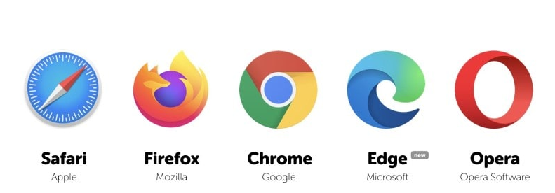

Ultimele decenii s-au caracterizat printr-o explozie informațională fără precedent în istoria omenirii, fapt ce a dus la creșterea importanței resurselor de comunicație.
Comunicarea și schimbul de informații între oameni și calculatoare reprezintă motivația existenței rețelelor de calculatoare interconectate, în cadrul cărora se detașează mediul de rețele extrem de complex constituit de Internet.
Noțiunea Internet (INTERconnected NETworks) reprezintă o infrastructură, o colecție de rețele separate fizic (rețele de rețele), interconectate pentru a forma o singură rețea logică.
Internet este rețeaua mondială ce interconectează rețelele din diferitele părți ale planetei într-o singură rețea logică.
Precursoarele rețelei mondiale numită Internet sunt două rețele apărute în Statele Unite: ARPANET (Advanced Research Projects Agency Network, 1969) a Departamentului Apărării, care a conectat patru calculatoare la distanță și NSFNET (NSF – National Science Foundation, 1970) a Fundației Naționale de Știință.
Anul apariției World Wide Web se consideră 1989. Autorul său este omul de știință britanic Tim Berners-Lee (născut în 1955).
Accesul la rețeaua globală Internet poate fi obținut prin intermediul unui calculator personal, notebook, telefon celular, TV, automobil, consolă de jocuri, centru muzical etc.
Internetul vă permite să obțineți diverse informații, să utilizați resurse educaționale
.În rețeaua globală Internet, utilizatorul poate accesa și studia diverse biblioteci electronice, cataloage ale celor mai mari muzee din lume, pot să citească știri, pot să-și aleagă diverse produse în magazinele online. Conferințele online care se desfășoară pe Internet, la fel sunt organizate cu scopul comunicării interpersonale.
Principalele posibilități și caracteristici ale Internetului sunt realizate prin serviciile oferite. Cele mai populare dintre ele sunt World Wide Web și E-mail.
Alte exemple de servicii Internet :
- Noutăți, știri (NEWS) — grupuri de știri, noutăți, teleconferințe;
- Transfer de fișiere (FTP) — File Transfer Protocol Service;
- Telefonie IP — bazată pe adresa IP a calculatorului;
- Televiziune IPTV — televiziune digitală;
- Comunicări IRC— comunicare text în timp real (chat), etc.
Serviciul WWW sau World Wide Web vă permite să obțineți informațiile necesare, prezentate sub formă de documente speciale denumite documente Web.
Un document Web este o colecție de pagini Web interreferite, împreună cu elementele lor informaționale și de control încorporate.
Documentul Web publicat în rețeaua globală este cunoscut sub denumirea de site Web.
Cele mai cunoscute și des utilizate documente Web sunt documentele în format HTML – documentele în care informațiile, legăturile, elementele de control și metadatele sunt descrise în limbajul HTML (Hyper Text MarkUp Language – limbajul de marcare a hipertextului).
Atunci când un program de explorare deschide un fișier HTML, el interpretează marcajele întâlnite în text în conformitate cu regulile limbajului HTML.
O pagină Web poate conține text, imagini, secvențe sonore și video, elemente de control și referințe către alte pagini Web etc.
O referință de pe o pagină Web este o parte a unui document (un cuvânt, propoziție, imagine etc.) care se referă la o altă secvență a documentului curent sau la un alt document, aflat pe același server sau pe alt server. Referințele (se mai numesc linkuri, legături, hiperlegături) reprezintă, probabil, cea mai importantă caracteristică a limbajului HTML.
Referințele reprezintă zone active ale paginii Web, în sensul că la executarea unui clic pe ele, programul de explorare va actualiza pagina.
Fiecare pagină Web are o adresă unică URL (Uniform Resource Locator – localizare universală a resurselor). Adresa paginii Web conține modul de accesare a unei paginii și numele serverului de pe Internet unde se află.
Adresa paginii Web conține de obicei denumirea scurtă a țării sau a tipului de site Web: .de – Germania, .fr – Franța, .ua – Ucraina, .ro – România, .md – Moldova, .com – un site comercial, .gov – un site guvernamental, .edu – un site educațional, .net – pentru furnizorii de Internet.
Pentru un site web, este obișnuit să specificați adresa paginii sale principale, de exemplu:
- https://www.microsoft.com/ro-md/
- https://edu.gov.md/
- Adresa unei pagini Web poate conține calea către aceasta (sau un document) de pe pagina principală a site-ului web, de exemplu, https://www.pbinfo.ro/probleme/categorii/7/elemente-de-baza-ale-limbajului-structuri-repetitive
Pentru a vizualiza paginile Web, sunt proiectate aplicații speciale – programe de explorare sau de navigare pe Internet (în engleză browser). Pictogramele celor mai renumite programe de navigare:
Programul de navigare poate fi lansat făcând clic pe pictograma sa din bara de activități, făcând dublu clic pe pictograma de pe desktop sau clic pe butonul Start, apoi alegând aplicația necesară.
Se va deschide o fereastră, care poate avea un aspect diferit în dependență de browser-ul folosit. Ele pot avea și alte meniuri, bare, butoane dispuse diferit, dar cele trei componente de bază (butoanele de navigare, bara de adrese și zona de informații) sunt comune și au același rol și funcționalitate în toate browser-ele.
Pentru exemplificare, în figura următoare este prezentată fereastra aplicației Chrome, în care este afișată pagina www.google.md împreună cu serviciile și aplicațiile sale.
Această pagină, în afară de motorul de căutare propriu-zis, conține referințe la serviciile de comunicare prestate de compania Google: poșta electronică (Gmail), conferințe video (Meet), bloguri (Blogger), mesagerie instantă (Hangouts). De asemenea, pagina respectivă conține referințe la serviciul de stocare a fișierelor (Drive), de stocare și de difuzare a fotografiilor, de traducere automată, de editare a documentelor etc.
Programele de navigare pe Internet se folosesc și pentru accesarea rețelelor de socializare. Pentru a accesa rețeaua dorită, este suficient să-i comunicați programului de navigare adresa acesteia.
Pentru a deschide un site Web sau un document Web, trebuie doar să tastați în bara de adrese a programului de navigare adresa site-ului sau a documentului și să apăsați Enter.
În versiunile moderne ale programelor de navigare, principalele operații ce pot fi efectuate nemijlocit în program sunt ascunse în meniul de setări: în browser-ul Google Chrome, acționând butonul de particularizare și control ⋮ din colțul dreapta al programului.
Meniul respectiv vă permite să imprimați o pagină Web (opțiunea Print...), să căutați textul necesar (opțiunea Find...), să copiați fragmentul selectat al paginii pentru al lipi în document (opțiunea Copy), să modificați scala paginii (opțiunea Zoom) etc.
Istoricul de navigare (comanda History) conține o listă cu toate site-urile vizitate de un utilizatorul al calculatorului.
Pentru personalizarea programului de navigare, alegeți opțiunea Settings (Configurare). Aici pot fi modificate setările prestabilite referitoare la securitate și siguranță, la motorul de căutare, limbă aplicație etc.
Când navigați pe Internet, puteți marca pagina Web (opțiunea Bookmarks – semn de carte) – o secțiune specială a programului de navigare unde se salvează informațiile găsite în Internet. Marcajul salvează adresa site-ului sau a paginii Web vizitate. Aceste informații pot fi accesate mai târziu.
Pentru a crearea unui semn de carte al unui document Web deschis, executați comenzile Bookmarks 🡪 Bookmark this tab…. Apoi, alegeți sau editați numele semnului de carte în document și faceți clic pe Done.
Puteți vizualiza toate semnele de carte salvate utilizând comanda Bookmarks🡪Bookmark Manager ;(Manager de semne de carte).
Pentru a șterge un semn de carte, utilizați comanda Delete (Ștergere) din meniul contextual.